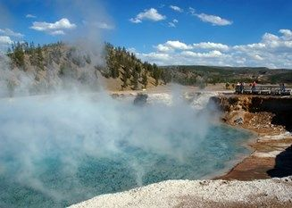

Aardwarmte en bodemwarmte
Warmte uit de aardbodem en het bodemwater is een duurzame vorm van energie. Afhankelijk van de diepte heet het aardwarmte of bodemwarmte. Afhankelijk van de diepte heet het aardwarmte of bodemwarmte.
Voordelen van Aardwarmte en bodemwarmte
- Het gebruik van aard- en bodemwarmte zorgt niet voor uitstoot van CO2 en klimaatverandering.
- Raakt nooit op, mits het goed toegepast wordt.
Nadelen van Aardwarmte en bodemwarmte
- Is heel erg duur.
- Grondwater dat zo diep in de aarde zit, kan wel erg zout zijn. Als de leidingen waardoor het wordt opgepompt gaan lekken, kan het ons grondwater en drinkwater vervuilen.